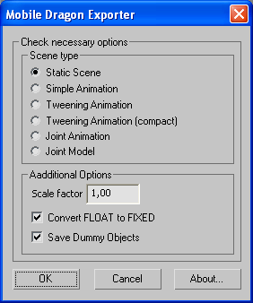

Content:
Models creating general statements
Static scenes (Static Scene option)
Joint Animation (Joint Animation Option)
Introduction:
All the descriptions of 3D graphics and work with 3D Max, were given according to the export function and they don’t aspire to completeness and incontestability.
Installation
To install the exporter, you need to copy MDExp.dle file to the %3DMax%\stdplugs folder. It would be connected to 3dMax automatically with it’s next run.
NOTE:
Here and further %3DMax% – path to the installation folder of 3D Max.
After the installation in menu File->Export… in the list of file types for export a new line “Mobile Dragon Model (*.MDM)” would appear – this is a type of file to where scenes are being exported.
It is necessary to create text files in %3DMax% folder with Udef.txt and Roboid.txt names for correct work of the exporter. You can leave them empty for the firs time. Explanations about them would be given below.
When exporting, after you named a file and pressed the “Save” button, a dialog box would appear (see picture 1).

Pic. 1 – Exporter window
LOG - File
When saving scenes, exporter creates the LOG – file. This file has the same name as the export file has, but with “.log” extension. They would be created in the same folder. For example: if scene has been exported in the “test.mdm” file, then LOG – file would have the “test.log” name and they both would be in the same folder.
LOG – file helps to find out if the scene was saved correctly and also it helps to reveal saving errors. If there would be any errors while exporting, then a window with message about error would appear. After closing this window, LOG – file would be automatically opened for viewing. If there would not be any errors then LOG – file would not be opened automatically.
Those lines in the LOG – file, which don’t have any information about errors or warnings starting with the “#” symbol. Lines which have information about errors starting with the “!” symbol. Lines which have just warnings starting with the “?” symbol.
There is summary information about errors and warnings in the end of the LOG – file.
Object names agreements
You may name your scene objects with any name except some reserved names which you can find in Table 1:
Table 1: Reserved names.
It would be better if the scene objects will have names with proper sense because they would be used in the game. It is allowed to use the same names for objects with the same sense. For example: if there is a hundred trees in some scene, then all of them might have the same name – TREE.
Important: Those scenes where Levels Of Details (LOD) are planned to be used, can not have any objects with the same names. For example: if you have several trees in one scene you’d better name them like: TREE01, TREE02, TREE03, TREE04 etc. You can read more about it in the «Levels Of Details» part.
Hierarchy of Objects
When creating static scenes it is recommended to divide the whole scene into separated objects and subobjects which you can logically select among the other objects. For example: if scene consists of ground, trees and house then it is recommended to create them as a separated objects.
If the game process needs clear distinction among some objects of the scene, then you need to separate that objects too. For example: you need distinction between the house and it’s door. It is possible to separate the scene into subobjects if the game’s logic needs it. For example: trees and leafs, house and door, field and road. So if there is no need in distinction between the tree and it’s leafs, then you can create them as one object (reminder: in this case you will have to create one general texture for it).
To keep the logics of the scene safe, it is strongly recommended to use object’s parent links. For example: if the house and it’s door are separated objects, than it is recommended to link the door to the house (the door is a logical part of the house).
Also you can use groups of objects for logical linking. You can link one group of objects to the other. It will simplify work with these groups of objects, but all objects of every group will be exported separately. Only parent links will be exported for future usage in the game.
NOTE:
Parent links in animation models are necessary. If they are missing or there are some violations when exporting, then messages about error would appear in LOG – file.
Geometric objects
The exporter supports all types of geometric objects. Limitation of polygon’s sizes: the lengths of at least two sides of the polygon (triangle) shouldn’t exceed a 50 units limit each. There is no limitation for object’s modification (scale, reflection etc.) You can find requirements for object’s materials in part “Materials”.
You may name your objects with any name except some reserved names which you can find in “Object names agreements” part.
Lights
The exporter supports only Omni type lights.
List of the parameters which are taken into consideration when exporting:
On/Off switch setting;
Color;
Multiplier;
All the Near Attenuation group parameters;
All the Far Attenuation group parameters.
Materials
Every scene object have to have it’s own unique material. It means that you can’t convert object into Editable Mesh, and then select different polygons and assign different materials to them. Also in “Material Editor” one slot should have only one material (texture) . Multistructures are prohibited.
All the textures which are used for materials should be in %3DMax%\maps\ folder or in subfolders. For example: C:\3dMax\maps or C:\3dMax\maps\level2\ are correct paths.
List of the material parameters which are taken into consideration when exporting:
Ambient;
Diffuse;
Specular;
Self-Illumination (the Color switch should be On, otherwise the black color would be saved as default setting);
Shininess;
Opacity;
2-Sided switch setting;
Wire switch setting;
Texture file name.
Material might have no texture.
Light Map
There is a second channel texture’s coordinates supported in games for light map usage. If object has it’s own light map, then the Unwrap UVW modifier should be applied to this object. Then in the Channels group you should select Map Channel and set it as 2. Editing texture’s unwrap realizes as always (“Edit” button).
Light Maps can be used only in static scenes. For shadows calculation you need to set the Omni lights. For the conformity of calculated shadows to the shadows of 3dMax, you need to switch the Use flag of the Far Attenuation parameter and regulate it’s End value. So, you need to regulate only the End setting of Far Attenuation parameter to get the conformity of the 3dMax image to the image which will be in your game.
User Defined Info
You can find object properties of every scene object in “Object Properties” window, there is also a “User Defined” tab. It is possible to get and save all the parameters which are in this tab.
It is recommended to use this opportunity from extreme necessity.
One of the conditions for the correct work of the exporter with parameters is preliminary definition of their names and types. Their names and types are listed in “Udef.txt” file (it should be in 3d Max root folder).
There are 5 types of parameters supported:
Integer (int) – it should be an integer number (for ex.: 122)
Boolean (bool) – it shoul have the only meaning [true, false]
Float (float) – it should be a floating point number (for ex.: 1.22)
String (str) – it should be a string parameter
FLAG (flag) – if there is a FLAG in “User Defined” than it means that this parameter is on, if no than it’s off by default.
Symbol register for names and types of the parameters doesn’t make sense. Here is a format of parameter definition:
<parameter_name>(<parameter_type>)
There should not be any space between <parameter_name> and “(“ symbol!!!
Brackets are necessary. Every parameter should be defined in every separate line. Name and type of the parameter shouldn’t have any spaces.
Example of the Udef.txt file content:
Width(INT)
volume(Float)
IS_VISIBLE(booL)
MegaNAmE(str)
STATIC(flag)
NOTE:
There are different symbol registers in this example, but it would be better to hold to the one of the registers.
When processing scene objects, exporter will search the parameters listed in Udef.txt file in User Defined tab properties of these objects and in case it will find them, it will read their values. To write the name and to set the parameter’s settings, you have to use the upper register (except string settings).
Example of the User Defined label for some object
WIDTH = 122
VOLUME = 1.22
IS_VISIBLE = TRUE
MEGANAME = Apple!
STATIC
Note:
In this example there is a FLAG “STATIC” in User Defined tab, it means that this flag is on. “IS_VISIBLE” parameter is written strictly in upper register (as it should be done). “MEGANAME” parameter is string (Apple!) that’s why you don’t have to stick to the upper register.
There could be spaces between parameter’s name and “=” symbol.
If some or even all the parameters in User Defined object options are missed but they were stated in “Udef.txt” file, then it’s not an error. Also if there would be some parameter in User Defined options, which name and type weren’t stated in “Udef.txt” file, then it wouldn’t be an error too. This parameter will be ignored and it would not be exported.
System objects
“System objects” are used for auxiliary purposes. Exporter processes system objects in special way. These objects are needed to keep an additional information about the scene and it’s objects.
System objects are being defined by names. Name of such object starts with “!” symbol. There are system names which were reserved:
!CONTROLLER – name of controller-object which is used for creating of animated models.
!ROOM – name of room-object which is used for creating of static scenes with portals.
!PORTAL – name of portal-object which is used for creating of static scenes with portals.
!GROUND – name of ground-object which is used for creating of static scenes with portals.
!JOINT – name of joint-object which is used for creating of joint animated models. (for ex.: robots).
!DUMMY – name of dummy-object.
You can’t name an object with one of these names if it is not a system object. You can find detail description of all the system objects below.
Models creating general statements
All the models of different types of scenes and animation should have sensible names because these objects are going to be used in game development.
Objects can be created with the “instance” method. For example if there are few equal objects in one scene (for ex.: set of trees), but they have different coordinates and orientation, it is better to create only one object and make copies via “instance” method. In this case only the model of the first object would be saved. Other objects would be saved with the link to the base geometry and local transformation matrix. The size of the compiled file will be much smaller.
It is possible to set the user settings in object properties (Properties –> User Defined tab). Read more in “User Defined Info” part.
For every object in different scene types following parameters are saved:
Object name
Parent reference
Instance reference (if they are)
User Defined information
In other cases additional necessary information is saved.
Static scenes (Static Scene option)
There are two types of static scenes: static scene with portals and static scene without portals (simply static scene).
Static scene has geometric objects (see “Geometric objects”) and omni lights (see “Lights”).
Scene with portals has not only lights and geometric objects but also a system objects kit: !ROOM, !PORTAL and !GROUND. These system objects are not drew in the game. They are used to point out the logical division of scene in separate rooms.
Objects of static scene can have several levels of detail. Read more in “Levels Of Details” part.
!ROOM
It could be any geometric object. It’s geometry is not saved, but his object hierarchy is saved. Name format:
!ROOM_<room_name>
Examples:
!ROOM_A
!ROOM_MAIN
There are two rooms with “A” and “MAIN” names in this example.
It is prohibited to create rooms with the same names. When creating a static scene with portals, objects which are logically belong to one room should be linked with parent references to this room-object.
!PORTAL
Portal is a system object which shows the point of connection of two rooms. Actually this is a passage from one room to the other. Portal is a geometric object of Plane class. Length Segs and Width Segs portals parameters should be set as 1, so portal is an object of plane type which consists of 2 triangles (4 vertexes). You don’t have to set the portal’s material (it will not be exported).
The portal’s name shows which rooms it connects.
Portal-object name format:
!PORTAL_<room_name_1>/<room_name_2>
Examples:
!PORTAL_A/B
!PORTAL_ROOM_X/ROOM_Y
There are portal names in this example, first of them connects A and B rooms, the second one connects ROOM_X and ROOM_Y rooms.
Portal-objects, unlike the other static objects in portal scenes, shouldn’t be linked to the room-objects manually. Portal will link to the both room automatically by its name. Objects which are logically belong to two rooms at one time (for ex.: door), should be linked with parent references to portal-object that links these rooms. The following picture (pic. 2) show how objects in static portal scene should be linked.
Picture 2 – Example of linking of objects in static scene with portals.
There:
– system objects (rooms/grounds/portals)
– simple geometric objects
– linking by parent references
– linking by name
!GROUND
Ground is a system object which helps to find out in which room view camera is situated. Ground-object should be a geometric object of a Plane type. There are no limits for polygons. Ground-object should be on the same level and of the same shape as a real ground of the scene. Ground-object’s geometry could be easier comparing to geometry of a real ground of scene because it is used only for calculations.
Ground-object name format:
!GROUND_<ground_name>
Examples:
!GROUND_MAIN
!GROUND_SECOND
There are no limits for ground-object’s name.
Ground-objects should be linked to rooms with 3D Max means (see pic.2).
Animation. Common features:
To create animation you should perform some requirements which are written below.
Important Note:
You should perform these requirements when making Simple, Joint or Tweening animation.
At first you have to create an animation model. Then before creating animation you need to reset all collected transformations on pivot points of model’s parts. To do this you have to select a part or whole model and than in “Utilities” tab select “Reset XForm” and than just press “Reset Selected” button.
After this operation normals could be inverted in some parts of model. If it happened, you can fix normals with “Normal” modifier. After that you can convert a model to “Mesh”. Now you can link model’s parts to each other if it necessary and start to create animation.
To create animation, designer should use controller-object where he can set common key frames.
To set common key frames for the whole model (not for model’s parts) there should be a system controller-object. It should have reserved system name - “!CONTROLLER”.
Animation’s settings saving starts from the first controller’s key frame. And the length of the last animation frame spreads to the end of timeline of 3dMax.
Picture 3 – Key frames of controller-object.
Controller can be shown as any geometric object on scene. It’s geometry will not saved, it is necessary only for the key frames information.
Simple Animation
Simple animation doesn’t differ a lot from static scene. Actually with this animation type model’s elements are saved according to the transformation matrix. In game this model will be moved with usage of local matrixes of transformation. For example: you can animate a helicopter’s propeller using around matrix.
There is no need in usage of controller-object in such animation type. No key frames would be needed here.
Hierarchic linking of animation objects is necessary. PIVOT points of all objects should be correctly arranged. It means that PIVOT should be set in the point around which should be rotation of some model block. It is necessary to reset all secondary transformations from pivot points of a model. Read more in “Animation. Common features” part about it.
Picture 4 – Example of arranging PIVOT points for parts of tank.
There is no need to set motion for the model’s parts, programmers should do that.
Export of a simple animation realizes on choosing “Simple Animation” radio-button in exporter window.
Model’s objects with simple animation might have different levels of details. Read more in “Levels Of Details” part.
Tweening Animation
This animation type (it is also known as Morphing animation) suits for creating of animated characters such as people, animals or explosions (but not robot type characters). In animation process their separate objects can change not only their situation but also they can change shape (for example they can be bent, squeezed or stretched). In every key frame (animation controller should be used) all information about geometry of animated object is saved. Main lack of such animation type is a big size of exported file.
For model animation in 3DMax designer can use skeleton, bipeds and invert kinematics. There is one requirement when creating tweening animation – animated model must have constant amount of vertex and faces during all animations phases.
At first character’s model animates with any method. It is necessary to remember that after creating a model you should reset all secondary transformations from PIVOT points of a model. Read more in “Animation. Common features” part. Then controller object is added to the scene. Designer should set on controller object a kit of key frames, in which character’s geometry is saved. The more key frames on controller, the more file size would be. In the intervals where character moves not so much it’s better to set key frames rarely. In the intervals where character moves a lot it’s better to set key frames more often.
In the game model’s animation would be created according to the key frames with usage of geometry interpolation.
Export of a tweening animation realizes on choosing “Tweening Animation” or “Tweening Animation Compact” radio-button in exporter window.
Tweening Animation Compact – is more compact type of saving tweening animation of character.
Joint Animation
This animation type is close to the bone animation. It suits well for creating robot type animated models. Such models keep constant shape through the animation process (they don’t bend, squeeze or stretch), they change only their position and orientation.
Such animation type has superiority above the Tweening animation. The difference is that you can change some parts of the animated model to the others with another geometry and the whole animation wouldn’t be changed. So you can animate a model of robot only once and then all you have to do is to change different model’s parts with another and animation will stay correct. For example: there is an animation of robot’s walking. Robot which was assembled of details of one kit would walk in the same way as the robot which was assembled of details of another detail kit.
This animation type supposes two stages of creating of animated models.
1 – creating of animation (motion of simplified model).
2 – creating of details kit (of a joint model), which is used to assemble the model.
Animation and joint model are saved in different files.
It is also important that sizes of files which are containing animation are of a small size, but sizes of files which are containing details kit (a model) are almost equivalent to the sizes of files as if the model was saved as a static scene or a simple animation.
For the conformity of the model animation and the details kit you should give the same names to the corresponding objects in animation and in the details kit. So if an arm in animation has name “ARM”, then in details kit it also has to be named as “ARM”. In other case detail’s animation wouldn’t be set to the detail. To prevent such situation and to provide the conformity of animation and details in the game you should correctly create and fill up the “Roboid.txt” file.
This file have to be placed in the %3DMax% folder. It holds a list of all possible names of model parts in joint animation. When exporting, a line’s number, in which object name is written, is taken into consideration. That’s why you should add names in file with the list of other names in the end of file. Because adding of the name somewhere in the middle of file will lead to the displace of numbers of other names and you will have to resave already saved joint animations and details kits.
Example of “Roboid.txt” file content.
HEAD
ARM_RIGHT
ARM_LEFT
TORS
FOOT_RIGHT
FOOT_LEFT
BASE
Now when naming objects of joint animation and details kits you need to give names from this list of names. Non-observance of this rule leads to the error message (in the LOG file).
Joint Animation (Joint Animation Option)
Create a model (it may be reductive and without material) and animate it in any way which wouldn’t change the geometry of separated parts of the model (so don’t pull any points of a mesh). Then add a controller object to the scene. Designer should set key frames on it. The more key frames are on controller, the more file size would be (in this animation type it is no so important). In the intervals where character moves not so much it’s better to set key frames rarely. In the intervals where character moves a lot it’s better to set key frames more often.
It’s important not to forget to name objects according to the “Roboid.txt” file.
Hierarchical linking of animation objects is necessary. PIVOT points should be correctly set on all objects. So PIVOT should be set in the point around which should be rotation of some model block. It is necessary to reset all secondary transformations from pivot points of a model. Read more in “Animation. Common features” part.

Picture 5 – Example of the hierarchical linking of the elements and PIVOT points arrangement for the model of robot.
Export of joint animation realizes on choosing “Joint Animation” in exporter window.
Creating Of Joint Model or Detail Kit (Joint Model Option)
Joint Model is a simple kit of separate parts of the whole model.
Details might be arranged wherever on the scene.
It’s important not to forget to name objects according to the “Roboid.txt” file. Arrangement (and axes direction) of PIVOT point of a concrete detail should coincide with arrangement of PIVOT point of corresponding element in animation model.
Picture 6 – Example of PIVOT point position
It is necessary to reset all secondary transformations from pivot points of a model. Read more in “Animation. Elementary knowledge” part.
According to the picture 6, you can see that object’s position in details kit on scene space of 3DMax doesn’t make any sense. It is important that PIVOT points coincide to corresponding objects in joint animation.
Next step is joint arrangement.
For joint usage a system joint-object should be leaded in. It should have a reserved name “!JOINT”.
Joint can represent itself as any geometric object on the scene. It’s geometry is not saved, it only has information about the joint position. Information of the joint position represents it’s PIVOT point, that’s why it is better to use a sphere as joint object because it’s PIVOT point is in the center by default.
Axes directions of PIVOT point of joint should coincide with axes directions of PIVOT point of object to which this joint is fixed.
Next you have to set parent links. Joints are fixed to details; details are fixed to joints.
Picture 7 – Example of joint parent links setting.
There is no need to set details on scene with some or even any sense.
Picture 8 – Possible arrangement of objects on scene and their parent links.
Export of joint model realizes on choosing “Joint Model” in exporter window.
Levels Of Details
When creating a static scene, models with simple animation, tweening animation and joint animation, it is possible to use Levels of Details. They can be used for optimization of graphics output in the game. It’s possible to output objects which are far from the camera with lower details than objects which are close to camera.
There is no limitation for amount of Levels of Details.
To create Levels of Details you need to create several scenes with the same objects: object’s details can (and should if you are creating different levels of details) be different in different scenes, but object’s names should strictly coincide.
Also there is a restriction for the name format. Objects of the one scene shouldn’t have the same names. So if there is 10 trees on the scene, than you have to name them as TREE01, TREE02, TREE03… TREE10.
It is recommended to draw the whole scene in the highest level of details first, than create several copies of this scene for lower levels and after that you can decrease details on these copies (pic. 9). Positions of corresponding objects in different levels of details should coincide.
Picture 9 – Example of the scene with different levels of details
Special feature is that if you need that in the current level of details one of the objects was shown as in the previous level of details, than you can delete this object. It will save the file size (pic. 10).

Picture 10 – Example of the scene with missed objects and different Levels of Details
DUMMY Objects.
Exporter also lets to save dummy objects. These objects are not shown in the game but they keep an additional information.
Any dummy object should have the name of the following format:
!DUMMY_< object_name>
Examples:
!DUMMY_A
!DUMMY_POS
Now there are two types of dummy objects supported:
– Box
– Sphere
Difference is that they save different parameters.
For the BOX type object is saved:
Object name
Parent links
User Defined
Min and Max significance of the box (Bounding Box)
Transformation matrix: in case if the box was rotated after it’s creating, than error would appear in LOG file (Axis Aligned Bounding Box).
For the SPHERE type object is saved:
Object name
Parent links
User Defined
Sphere radius
To save the dummy object you need to check switcher “Save Dummy Objects” in exporter window up, otherwise information about such objects wouldn’t be saved.
Copyright 2005-2006 Herocraft Hitech Co. Ltd.